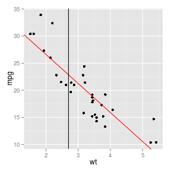

Joe Curran
This application allows you to get a rough estimate of a car's mpg. Simply ask the mechanic to weight the car you are intrested in.
MotorTrends has published reliable data on a series of cars.
We use a simple linear model, represented by red line, to
estimate mpg from weight.

The vertical black line is the input for weight=2.7.